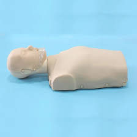

Mardi 22 avril
Aujourd’hui, c’est la rentrée de la dernière période de l’année !
Les élèves étaient contents de retrouver leurs professeurs, ainsi que toutes les personnes qui font vivre l’école au quotidien, heureux de revoir leurs camarades, de partager leurs souvenirs de vacances et de retrouver l’ambiance de la classe.
À leur arrivée, ils ont aussi pu admirer les arbres, désormais couverts de feuilles, embellissant la cour de récréation et ceux plantés dans les grands pneus !
Jeudi 24 avril
Aujourd’hui, les élèves de CE1 et CE2 poursuivent leur voyage à travers le monde. Ils racontent :
"comme nous sommes au printemps, nous avons observé les cerisiers en fleurs du Japon, puis réalisé des estompes de Sakura à la manière des artistes japonais. Ensuite, nous sommes passés à la création avec de l’encre soufflée pour représenter les branches."
Voilà le résultat !

Vendredi 25 avril
Aujourd’hui, les pompiers sont venus nous rendre visite !
Monsieur Guérin, sapeur-pompier à Artenay, a rencontré les élèves de CM1 et de CM2 pour leur apprendre les gestes qui sauvent.
Tout au long de la matinée, il a partagé son savoir-faire en classe, accompagné d’un mannequin, pour initier les élèves aux gestes de premiers secours à réaliser en cas d’urgence.
Un grand merci à lui pour cet apprentissage précieux qui pourrait, un jour, faire toute la différence !
